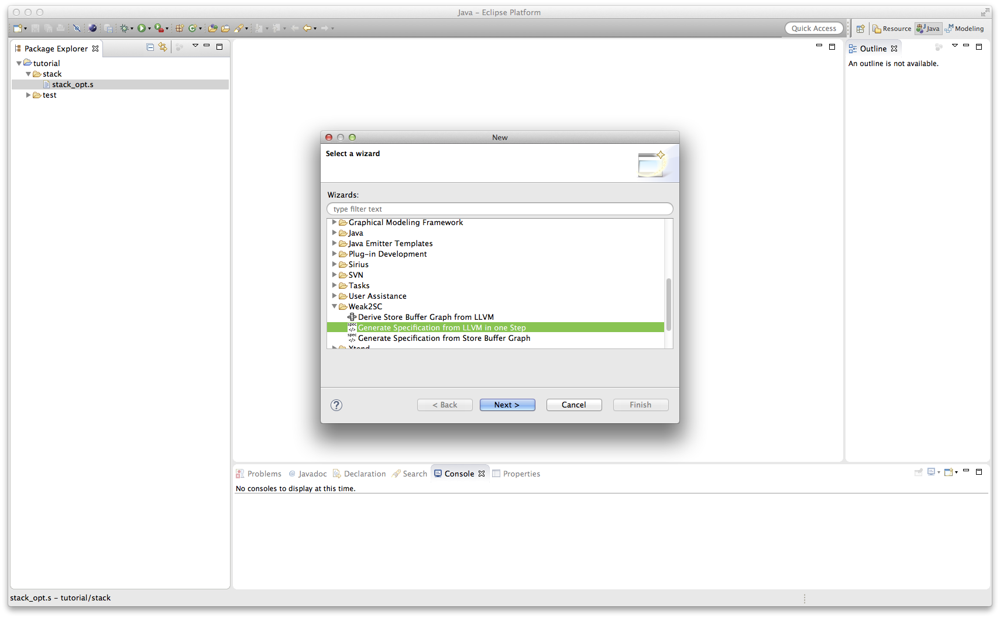
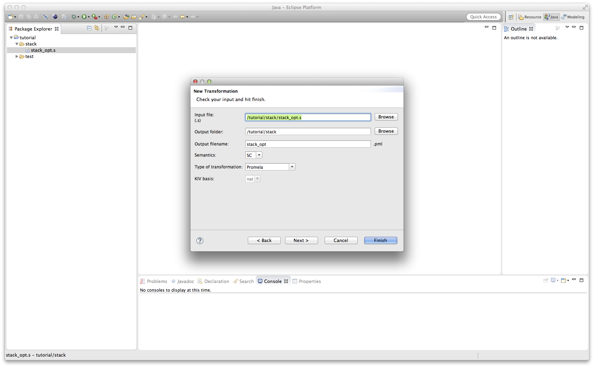

From LLVM to Specification in a single Step
In the following we show how to generate a specification directly from a LLVM file without intermediate steps and files.
How To
Take a look at the
step by step guide to see how to generate a LLVM file for a C file. Once you have a '.s' file,
right click it and select "New -> Other".

Next choose the wizard category 'Weak2SC' and select 'Generate Specification from LLVM in one Step'.

On the first page of the wizard you will be able to select several configuration parameters for the transformation such as the output folder, the memory model semantics
and the type of transformation, i.e. the type of the output specification. Change the values to your desire and click on 'Next'.

On the next page you will be informed about warnings and errors depending on your specification configuration. Errors make the generation impossible and need to be fixed, whereas
problems could be ignored but might lead to strange behavior.

After you have dealt with all warnings and problems, you can click on 'Next' and will be brought to the last page, where you can select specific functions and rename.

A last click on 'Finish' will start the generation process.
{kind=link}
{kind=link}